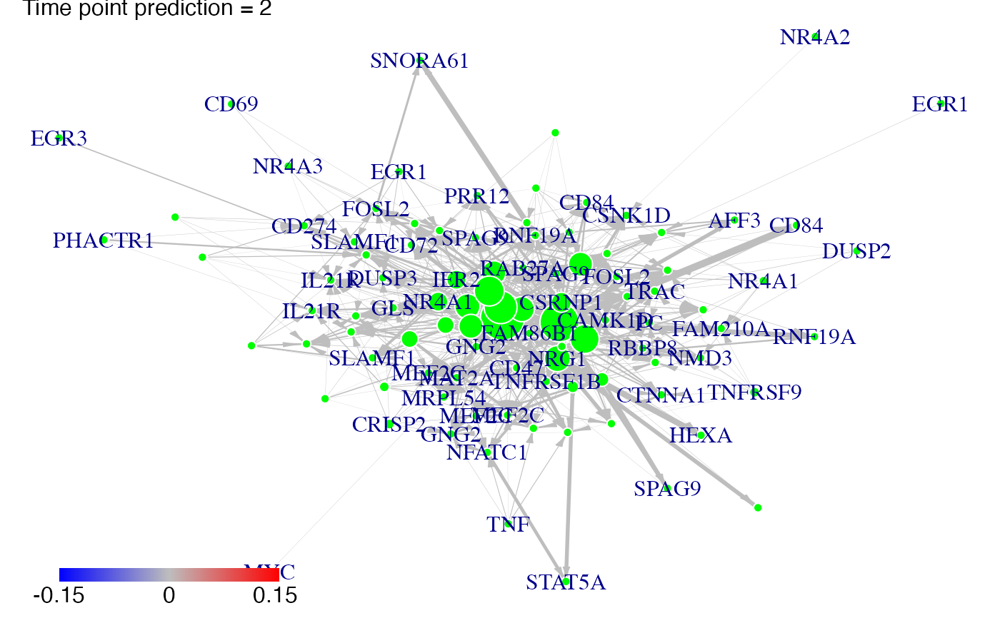
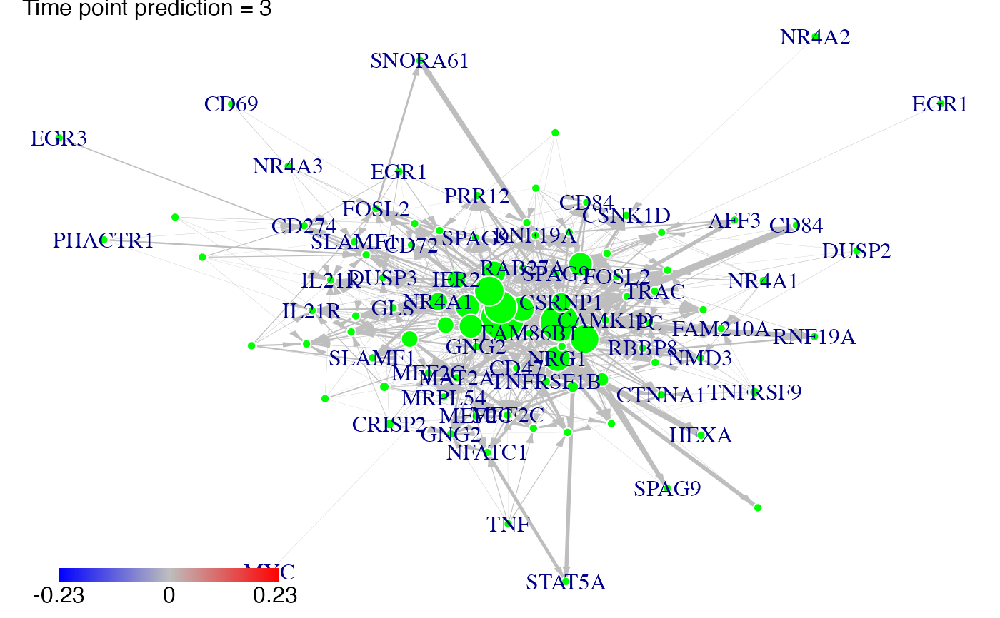
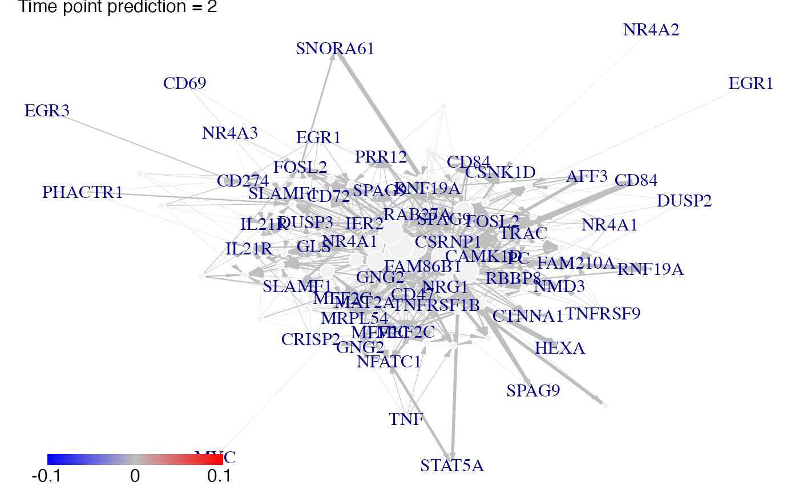
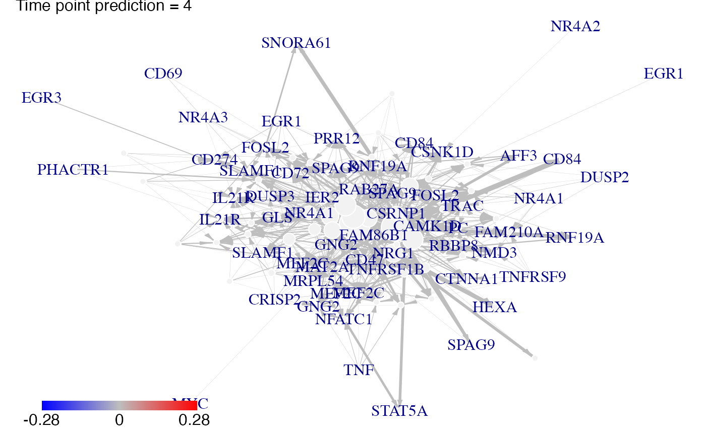

Prediction of the gene expressions after a knock-out experience for cascade networks.
Usage
# S4 method for class 'omics_array'
predict(
object,
Omega,
act_time_group = NULL,
nv = 0,
targets = NULL,
adapt = TRUE
)Arguments
- object
a omics_array object.
- Omega
a omics_network object.
- act_time_group
[NULL] vector; at which time the groups (defined by sort(unique(group))) are activated ?
- nv
[=0] numeric ; the level of the cutoff
- targets
[NULL] vector ; which genes are knocked out ?
- adapt
[TRUE] boolean; do not raise an error if used with vectors
Details
The plot of prediction of knock down experiments (i.e. targets<>NULL) is still in beta testing for the moment.
Examples
# \donttest{
data(Selection)
data(infos)
pbst_NR4A1 = infos[infos$hgnc_symbol=="NR4A1", "affy_hg_u133_plus_2"]
pbst_EGR1 = infos[infos$hgnc_symbol=="EGR1", "affy_hg_u133_plus_2"]
gene_IDs = infos[match(Selection@name, infos$affy_hg_u133_plus_), "hgnc_symbol"]
data(networkCascade)
#A nv value can chosen using the cutoff function
nv = .02
NR4A1<-which(is.element(Selection@name,pbst_NR4A1))
EGR1<-which(is.element(Selection@name,pbst_EGR1))
P<-position(networkCascade,nv=nv)
#We predict gene expression modulations within the network if NR4A1 is experimentaly knocked-out.
prediction_ko5_NR4A1<-predict(Selection,networkCascade,nv=nv,targets=NR4A1,act_time_group=1:4)
#Then we plot the results. Here for example we see changes at time points t2, t3 ans t4:
plot(prediction_ko5_NR4A1,time=2:4,ini=P,label_v=gene_IDs)


#We predict gene expression modulations within the network if EGR1 is experimentaly knocked-out.
prediction_ko5_EGR1<-predict(Selection,networkCascade,nv=nv,targets=EGR1,act_time_group=1:4)
#Then we plot the results. Here for example we see changes at time point t2, t3 ans t4:
plot(prediction_ko5_EGR1,time=2:4,ini=P,label_v=gene_IDs)


# }